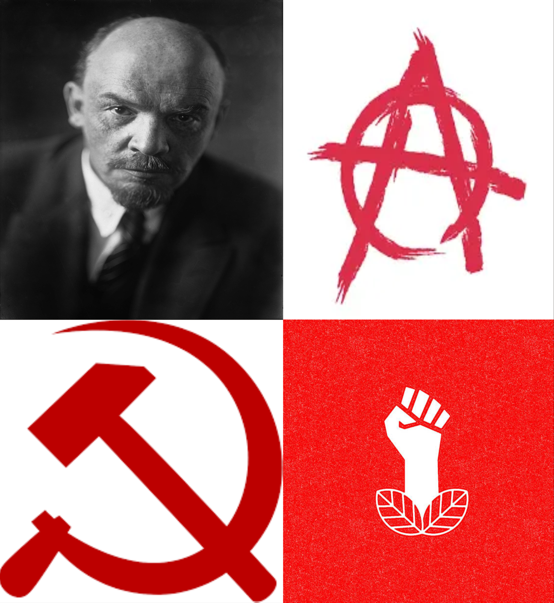
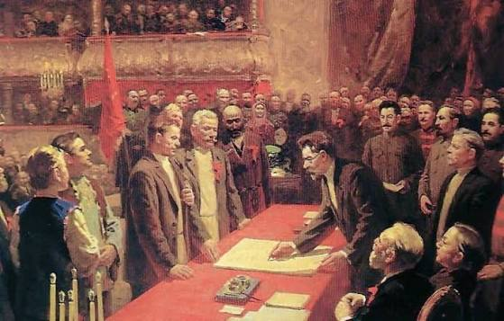

The far-left has its origins in radical movements that
emerged during the late 18th and 19th centuries,
particularly in response to industrialisation, economic
inequality and the growing power of wealthy industrialists.
One of its most influential foundations was the work of
Karl Marx and Friedrich Engels, who argued
that capitalism created an inherent conflict between the
working class (the proletariat) and the owning class
(the bourgeoisie).
They believed capitalism would eventually be replaced by
socialism and, ultimately, communism. The Russian
Revolution of 1917, led by Vladimir Lenin and the
Bolsheviks, became a major turning point, establishing
the foundations of the Soviet Union.
Core Ideologies and Beliefs
Communism:
Advocates a classless society in which the means of
production are collectively owned.
Marxism-Leninism:
A revolutionary communist ideology developed from
Marxism and Lenin's political theories.
Anarchism:
Opposes hierarchical systems of authority, particularly
the state and coercive institutions, and advocates
voluntary cooperation and self-governance.
Democratic Socialism:
Advocates replacing capitalism with a socialist economy
through democratic processes, emphasising collective
ownership, economic equality, workers' rights and
political freedoms.

Far-left political symbols and movements

Historical socialist leaders
Political Positions
The far-left generally advocates extensive wealth
redistribution, strong workers' rights and public or
collective ownership of major industries. Many movements
support universal healthcare, free education and extensive
social welfare programmes.
Socially, they frequently support minority rights,
gender equality and opposition to discrimination.
However, their preferred political systems differ
significantly. Some advocate democratic socialism and
decentralised government, while others support
revolutionary governments and centralised economic
planning.
Internationally, many far-left movements oppose
imperialism, colonialism and foreign military intervention.